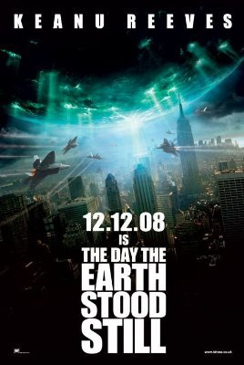

The Day The Earth Stood Still

The Earth obligingly stood still for us twice this week, on back-to-back nights. In each, a lone alien man arrives in a spaceship with his giant robot buddy Gort, to tell humans that they must mend their destructive ways or be destroyed.
The 1951 version was very Fifties - intrusively hopeless special effects, and seems to my eyes to be riddled with outlandish social etiquette and hopelessly naive politics. I suppose in the years following World War II any platform for preaching pacifism seemed worth a shot. If only more people considered it worth preaching today. I completely missed the Christian allegory that permeates the movie until it was pointed out to me: The alien comes from the heavens, and lives amongst common people, taking the name 'Carpenter' to blend in. He preaches peace to humankind, or else warns we will suffer a fiery apocalypse. He is our intermediary to 'Gort' (in fact the servant of Gort, in the original script) who later resurrects him from the dead, so that he may deliver his final message before being taken back up into the skies. Cute if you're into that, I guess.
Equally predictably, the 2008 version was very Naughties. Intrusively overblown production values string together a mediochre script. The pacifism and Christian message of the original has been replaced with a more timely environmental message - the writers perhaps intuiting that modern Americans are not so receptive to anti-war talk. Otherwise the scope and potential of the ideas at play are completely wasted - lost amidst the creative wasteland of a budget that could no doubt have fed countries. Once provoked, Gort unleashes self-replicating insectile microbots, which swarm and consume Philly, spreading fast. At the last moment, Keanu / Klaatu sees some humans hugging and crying, and has a big change of heart - the Earth deserves to be spared, after all. What a crock.
So there you have it. Watch this space for more reviews from me - wasting nights of my life, so that you don't have to. Final ratings:
10/10 if you are a stump-sucking mealy-mouthed pig-dog with googly eyes.
0/10 if you have any vestigial glimmers of taste or discernment.